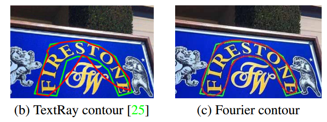
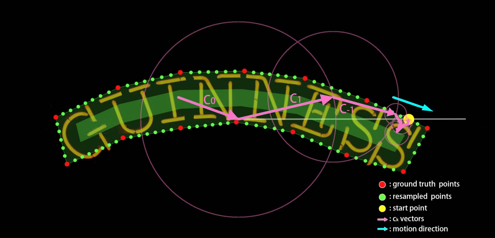

资源
1 | |
正文
Abstract
对于 arbitrary-shaped text detection，现有方法大都通过笛卡尔坐标系或极坐标系中的掩模或轮廓点序列来对图像空间域中的文本实例进行建模。点序列表示可能对具有高度弯曲形状的文本建模的能力有限。
为了解决这些问题，我们在傅立叶域中对文本实例进行建模，并提出了一种新的傅立叶轮廓嵌入（FCE）方法，将任意形状的文本轮廓表示为紧凑签名。
我们进一步构建了具有骨干、特征金字塔网络（FPN）和具有傅立叶逆变换（IFT）和非最大值抑制（NMS）的简单后处理的 FCENet。与以往的方法不同，FCENet 首先预测文本实例的紧凑傅立叶特征，然后在测试过程中通过 IFT 和 NMS 重建文本轮廓。大量实验表明，即使在高度弯曲的形状下，FCE 也能准确、稳健地拟合场景文本的轮廓，并验证了 FCENet 在任意形状文本检测中的有效性和良好的泛化能力。
在 CTW1500 和 TotalText 优于当前 SOTA！
1. Introduction
基于空间域的方法有明显的缺点。掩码表示可能导致本质上计算昂贵的后处理，并且经常需要大量的训练数据。轮廓点序列对高度弯曲的文本建模的能力可能有限。

在本文中，我们通过傅立叶变换在傅立叶域而不是空间域中对文本实例轮廓进行建模，傅立叶变换可以以稳健而简单的方式通过渐进近似拟合任何闭合轮廓。
为此，我们提出了傅立叶轮廓嵌入（FCE）方法，将点序列中的文本实例轮廓转换为傅立叶特征向量。
- 首先，我们提出了一种重采样方案，以在每个文本轮廓上获得固定数量的密集点。为了保持生成的傅立叶签名向量的唯一性，我们将文本轮廓与通过文本中心点的水平线之间的最右侧交点设置为采样起点，将采样方向固定为顺时针方向，并保持沿文本轮廓的采样间隔不变。
- 其次，通过傅立叶变换（FT）将空间域中轮廓的采样点序列嵌入到傅立叶域中。
FCE 用于文本实例表示的优势有三个方面：
-
Flexible：任何闭合的轮廓，包括极其复杂的形状，都可以精确地拟合；
-
Compactness（紧凑性）：傅立叶特征向量是我们方法的紧凑性。在我们的实验中，傅立叶度 K=5 可以实现对文本的非常精确的近似。
-
Simplicity：采样点序列和文本轮廓的傅立叶特征向量之间的转换被公式化为 FT 和逆 FT。因此，FCE 方法易于实现，无需引入复杂的后处理。
配备了 FCE，我们进一步构建了用于任意形状文本检测的 FCENet。特别地，它由具有可变形卷积网络（DCN）、特征金字塔网络（FPN）和傅立叶预测报头的 ResNet50 的主干组成。收割台有两个单独的分支。即分类分支和回归分支。前者预测文本区域遮罩和文本中心区域遮罩。后者预测傅立叶域中的文本傅立叶特征向量，这些向量被馈送到傅立叶逆变换（IFT）中以重构文本轮廓点序列。地面实况文本轮廓点序列被用作监控信号。由于 FCE 的重采样方案，我们在回归分支中的损失在不同的数据集之间是兼容的，尽管 CTW1500 和 Total Text 等数据集对于每个文本实例具有不同数量的轮廓点。
2. Related Work
2.1. Segmentation-Based Methods
基于分割的方法。
2.2. Regression-Based Methods
基于回归的方法。
2.3. Explicit vs. Implicit Text Shape Representation
从文本形状表示的角度来看，目前的模型大致可以分为两类。
- 通过每像素掩模或通过变换特征重建的掩模对文本形状进行隐式建模的方法。
- 使用笛卡尔系统或极坐标系统中的轮廓点序列对文本形状显式建模的方法。
3. Approach
3.1. Fourier Contour Embedding
我们用实变量 的一个复值函数 表示任意文本封闭轮廓如下:
其中 表示虚单位。 表示在特定时间 的空间坐标。由于 是闭合轮廓，因此 f(t)＝f(t+1)。 可以通过傅立叶逆变换（IFT）重新表述为：
其中 表示频率， 是用于表征频率 k 的初始状态的复值傅立叶系数。上面方程中的每个分量 表示具有给定初始手方向矢量 的固定频率 的圆周运动。因此，轮廓可以被视为不同频繁圆周运动的组合，如下图中所示的粉红色圆圈。

由于在实际应用中我们无法获得文本轮廓函数 的解析形式，因此我们可以将连续函数 离散为 个点，作为 ，其中 。在这种情况下， 可以通过傅立叶变换计算为：
其中 \mathbf c_k＝u_k+iv_k，其中 是复数的实部并且 是复数的像部。特别地，当 时， 是轮廓的中心位置。对于任何文本轮廓 ，我们提出的傅立叶轮廓嵌入（FCE）方法可以在傅立叶域中将其表示为紧致的 维向量 [u_{−K},v_{−K},...,u_0,v_0,...,u_K,v_K]，称为傅立叶签名向量。
我们的 FCE 方法包括两个阶段。即重采样阶段和傅里叶变换阶段。具体来说，在重采样阶段，我们在文本轮廓上等距采样固定数目的 N 个点(实验中 N = 400)，得到重采样点序列 f。注意，这个重采样是必要的，由于不同的数据集具有不同数量的文本实例的基础真值点，并且它们相对较小。 例如，CTW1500 中有 14 个，而 Total-Text 中有 4 ~ 8 个。重采样策略使我们的 FCE 兼容所有具有相同设置的数据集。在傅里叶变换阶段，重采样的点序列被变换成其相应的傅里叶特征向量。
傅立叶特征向量的唯一性。从 FCE 的上述过程中，很容易看出，即使对于相同的文本轮廓，不同的重采样点序列也会导致不同的傅立叶特征向量。为了使一个特定文本的特征向量唯一，并更稳定地进行网络训练，我们对 的起点、采样方向和移动速度进行了约束：
-
起点：我们将起点 （或 ）设置为通过中心点 的水平线与文本轮廓之间的最右交点。
-
采样方向：我们总是顺时针方向沿着文本轮廓对点进行重新采样。
-
匀速：我们在文本轮廓上均匀地重新采样点，并且每两个相邻点之间的距离保持不变，以确保匀速。
3.2. FCENet
配备了 FCE，我们进一步提出了用于任意形状文本检测的无锚网络 FCENet。
网络体系结构。我们提出的 FCENet 采用自上而下的方案。它包含以 DCN 为主干，以 FPN 为颈部提取多尺度特征的 ResNet50 和傅立叶预测报头。我们对 FPN 的特征图 P3、P4 和 P5 进行预测。表头有两个分支，分别负责分类和回归。
每个分支由三个 卷积层和一个 卷积层组成，每个卷积层后面都有一个 ReLU 非线性激活层。
损失函数：
其中 和 分别是文本区域（TR）和文本中心区域（TCR）的交叉熵损失。为了解决样本不平衡问题， 采用 OHEM，正负样本之比为 。
对于 ，我们不最小化预测的傅立叶特征向量与其相应的地面实况之间的距离。相反，我们在图像空间域中最小化它们重构的文本轮廓，这与文本检测质量更相关。正式地
其中 是用于回归的光滑 −l_1 损失，F^{−1}(·) 是 IFT。 是文本区域像素索引集。 和 是文本真实傅立叶特征向量，并且如果像素i在其对应的文本中心区域中，则为像素 的预测值 w_i＝1，而如果不是，则为 。 是文本轮廓上的采样数。如果 太小（通常 ），可能会导致拟合过度。
因此，我们在实验中固定了 。
4. Experiments
4.1. Datasets
- CTW1500
- Total-Text
- ICDAR2015
4.2. Implementation Details
4.3. Evaluation of FCE
4.4. Evaluation of FCENet
4.5. Evaluation on Benchmark Datasets
4.6. Evaluation on Highly-curved Subset
5. Conclusion
本文主要研究任意形状文本检测的显式形状建模。我们提出了傅立叶轮廓嵌入方法，该方法可以精确地逼近任何闭合形状。然后，我们提出了 FCENet，它首先预测傅立叶域中文本实例的傅立叶特征向量，然后通过傅立叶逆变换重建图像空间域中的文本轮廓点序列。FCENet 可以以端到端的方式进行优化，并且无需任何复杂的后处理即可实现。对拟议的 FCE 和 FCENet 进行了广泛的评估。实验结果验证了 FCE 的表示能力，尤其是在高度弯曲的文本上，以及 FCENet 在小样本训练时的良好泛化能力。此外，FCENet 在 CTW1500、Total Text 上实现了 SOTA 性能，在 ICDAR2015 上取得了有竞争力的成绩。